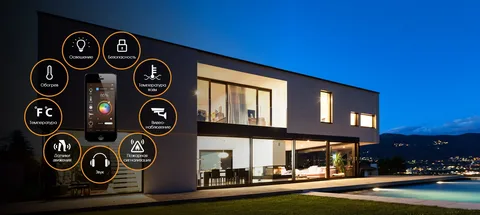
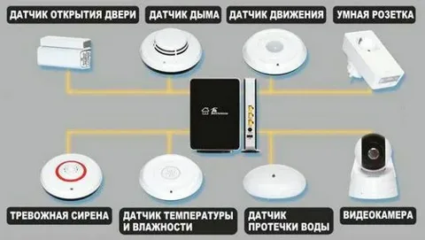
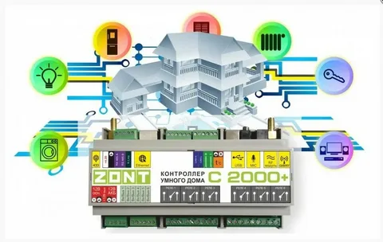

Система, которая обеспечивает безопасность, ресурсосбережение и комфорт в здании для всех пользователей. В простейшем случае она должна уметь распознавать конкретные ситуации, происходящие в здании, и соответствующим образом на них реагировать: одна из систем может управлять поведением других по заранее выработанным алгоритмам. Кроме того, от автоматизации нескольких подсистем обеспечивается синергетический эффект для всего комплекса.

Датчики — это устройства, воспринимающие внешние воздействия и преобразующие их в изменение электрического сигнала или других выходных данных

Контроллер умного дома - это многофункциональное устройство, что-то типа миникомпьютера, который контролирует подключенное к нему оборудование и реагирует на информацию, поступающую с датчиков системы "умный дом". Контроллер любой модификации перед установкой программируется на выполнение определенных задач.
